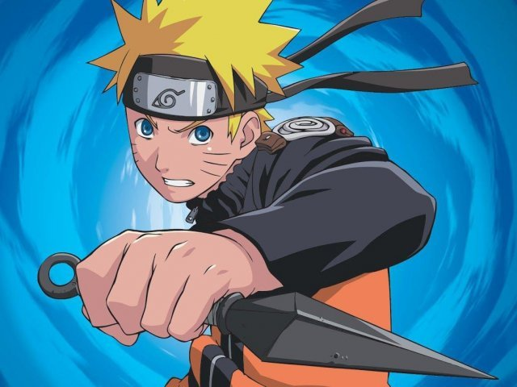

Naruto Shippuden
Sinopse
Naruto Uzumaki não é como os outros garotos de sua idade. Hiperativo e sonhador, este adolescente está sempre em busca de aprovação dos outros, e nada lhe trará mais reconhecimento do que se tornar um Hokage, o ninja mais poderoso da aldeia.
Conheça um pouco sobre Naruto Shippuden...
Aqui abaixo colocarei um pequeno resumo sobre Naruto Shippuden, a série tem 20 temporadas e acredito que, conhecendo um pouco dessa história, ninguém resiste a não saber mais e assistir a esse íncrivel anime que é inspiração para muitos e causa nos telespectadores todos os tipos de sentimentos possíveis. Bom, espero que você goste deste montante que fiz com base em informações de outros sites e em minha própria experiência em Naruto. Se divirta! :)
Personagens Crescidos
No Naruto Clássico, pudemos acompanhar o crescimento de Naruto e de seus amigos, não só em questão
à maturidade, mas também ao desenvolvimento de suas habilidades.
Em Naruto Shippuden, é possível que você fique
muito surpreso em ver o quanto eles cresceram (principalmente o Akamaru, já que agora o Kiba monta nele)!
Tanto Naruto e seus amigos tem em torno de 16/17 anos de idade, e não só Naruto, como todos, treinaram novas
táticas e habilidades, não ficando atrás de Naruto.
É emocionante ver que a amizade entre eles permanece,
mas Sakura e Naruto ainda tem esperança de trazer Sasuke de volta, e a busca continua.
Mais emoção
Se você acha que Naruto Clássico foi um dos melhores animes que você já viu, isto está prestes a mudar.
Ao assistir Naruto Shippuden ele provavelmente será o seu preferido, e eu te explicarei o porquê.
Naruto Shippuden apresenta uma história toda conectada, em que as coisas vão se esclarecendo e tudo se
ajeitando. Conhecemos mais pontos de vista de um mesmo acontecimento, são revelados novos personagens e novas
histórias, que vão se encaixando. Além disso, os poderes dos personagens vão sendo cada vez mais aperfeiçoados,
as lutas mais bem elaboradas e a emoção que você sente vem de várias formas. Alegria, tristeza, dor, inconformidade,
ansiedade, justiça, motivação e enfim, pode escolher. Pode saber que o que não falta em Naruto é perfeição.
Agora que você já conhece muito sobre Naruto, que tal responder umas perguntinhas, ein?
Eu te desafio a fazer o Quiz clicando aqui. Boa sorte, dattebayo!